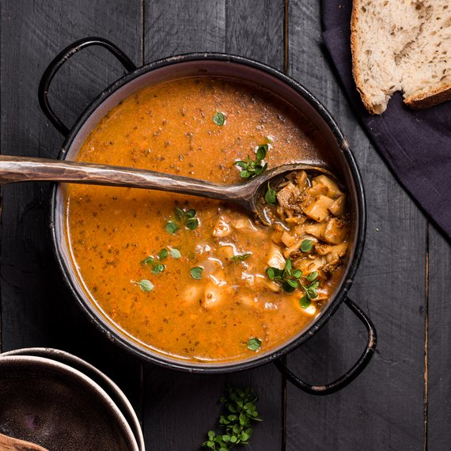

oyster mushroom soup

description
yummy mushroom soup that can be prepared quickly, available in any groceries and it doesn't cost much at all.
ingredients
for 4 servings
- 250g oyster mushrooms
- 2 onions
- 2 spoons of ghee
- 1 teaspoon of ground sweet pepper
- 1/2 teaspoon of caraway
- 1l of vegetable broth
- 1 teaspoon of dried marjoram
- salt
- pepper
steps
- clean and chop the mushroom + onion.
- heat 2 tablespoons of ghee in a pot, add the chopped onion and fry them on a low heat until soft and translucent.
- add the chopped mushroom to the pot and sauté the mixture for 5 min on a low heat.
- add sweet pepper and caraway to the mixture in the pot, then pour the vegetable broth, cover the pot and let it cook for 25 min on a low heat.
- season the cooked soup with salt, pepper and dried marjoram and enjoy the soup(๑ᵔ⤙ᵔ๑)